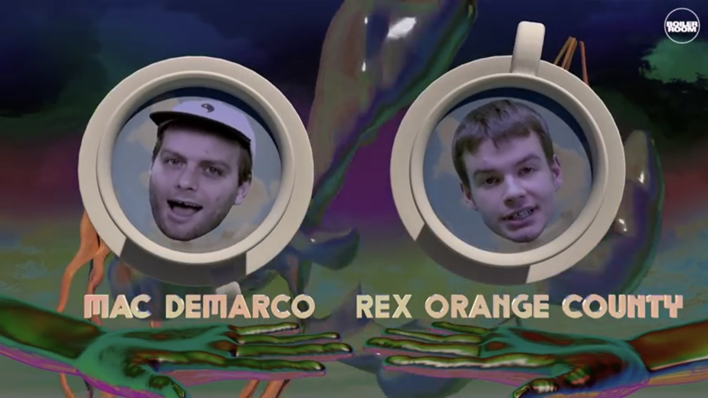
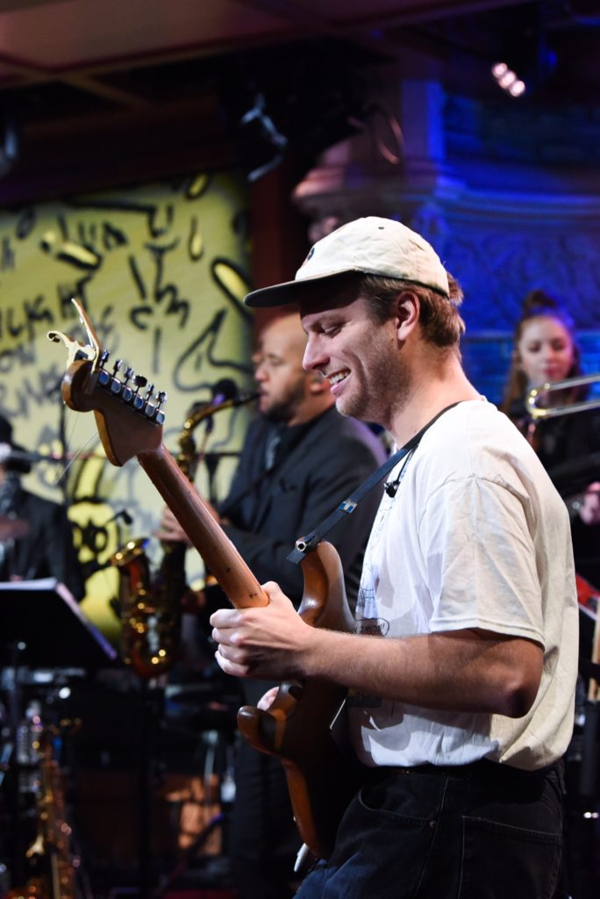
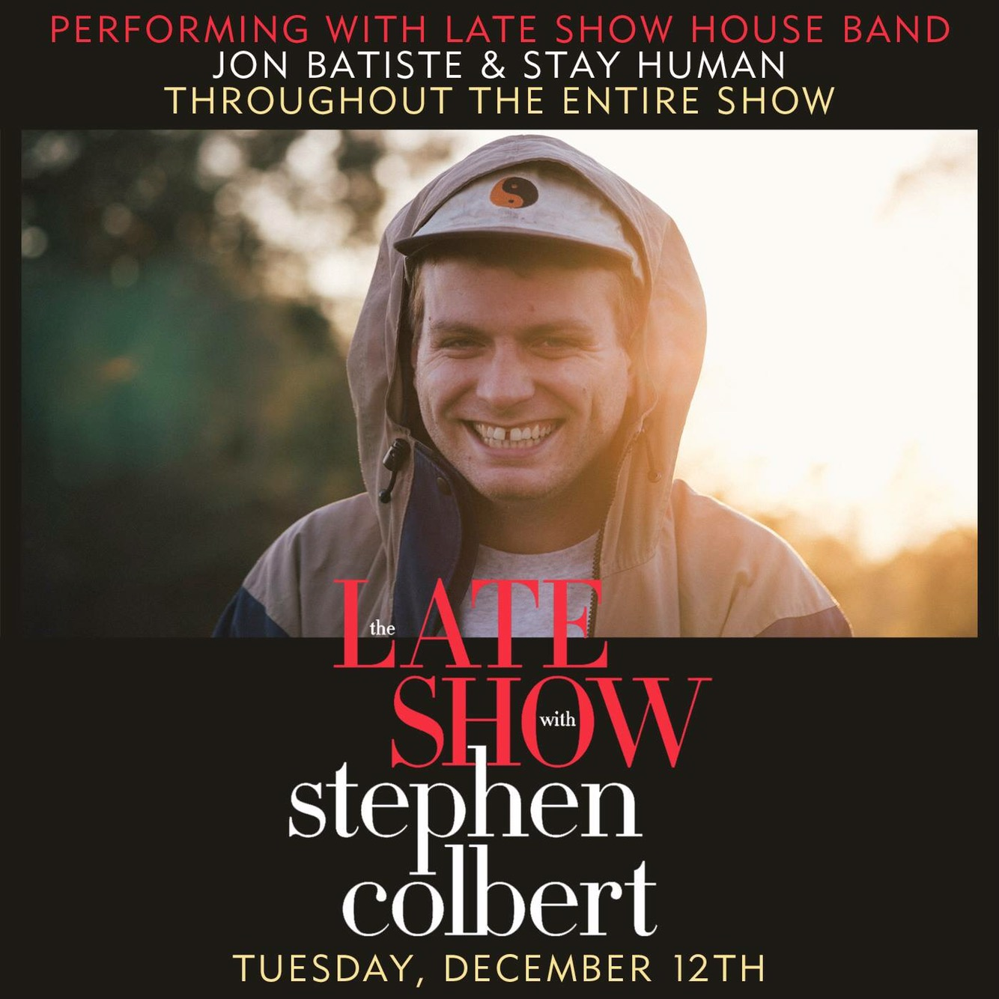
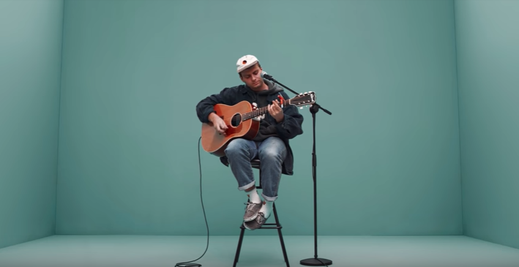
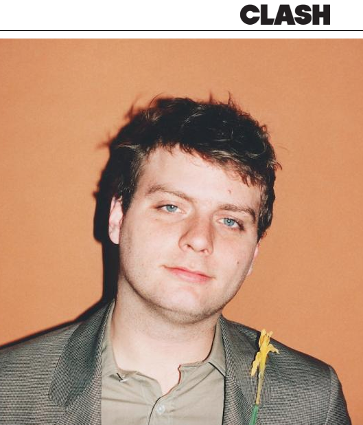
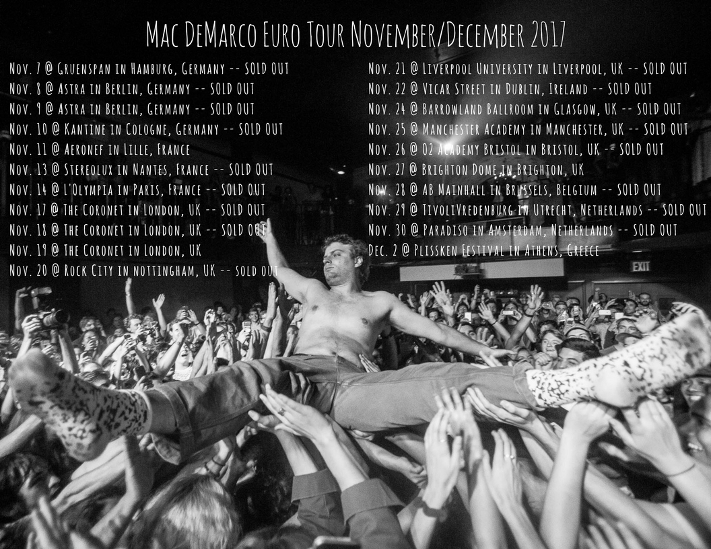
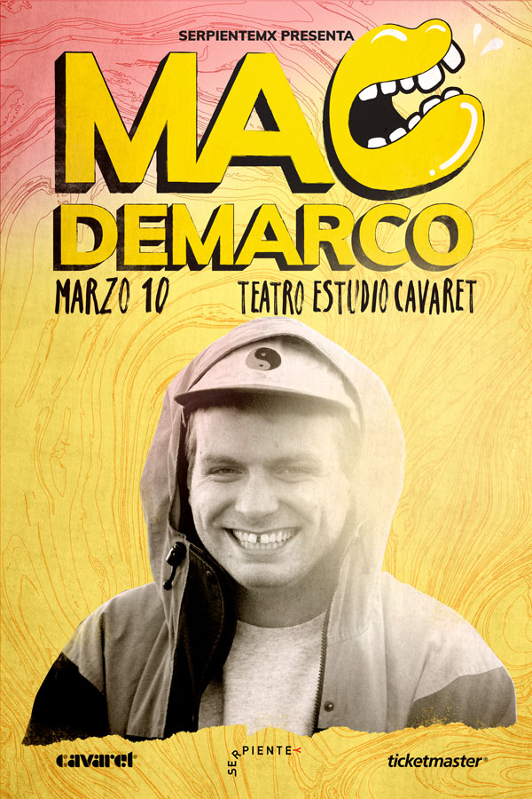

News
Mac Joins Rex Orange County for Boiler Room's Chat Room
20/12/2017
Mac chats with Rex Orange County for an episode of Boiler Room's Chat Room series. Check it out here!
-----
Watch Mac's Late Show Performance of "One Another"
14/12/2017
Mac sat in with the house band on "The Late Show with Stephen Colbert" this week. Watch his performance of "One Another" with Stay Human and Jon Batiste here!
-----
Mac on The Late Show with Stephen Colbert Tonight
12/12/2017
Tune into The Late Show with Stephen Colbert tonight at 11:35pm EST to see Mac performing with the Late Show House Band, Stay Human, and Jon Batiste throughout the show!
-----
A COLORS SHOW features Mac
28/11/2017
Mac performed "Still Beating" for COLORS this week on A COLORS SHOW session. Check it here!
-----
Clash Music Interviews Mac
15/11/2017
Clash Music interviewed our ol' Macky this week about his latest LP, 'This Old Dog.' Catch the article here!
-----
Mac Euro Nov/Dec tour starts now!
07/11/2017
Wanna catch Mac in Europe? Some dates still have tickets available! Grab them here. Photo by Will Oliver
-----
Guadalajara and Monterrey Dates Added
02/11/2017
Mac will be coming to Monterrey on March 8th. Tickets available now here! You can also catch Mac in Guadalajara on March 10th! Tickets on sale Monday 11:00 EST here!
-----
Buy Mac's Old Couch
02/11/2017

Get your couch here! Wanna buy Mac's old couch? Look no further. Mac's couch from Montreal is up for sale here via Arbutus Records. But that's not all! Mac will match the winning bid and all proceeds will go to Rock Camp for Girls Montreal. Auction ends on November 8th. Talk about a great cause and a great couch!